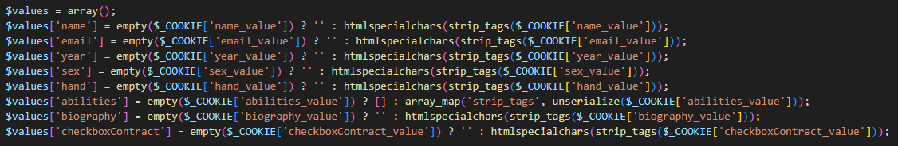
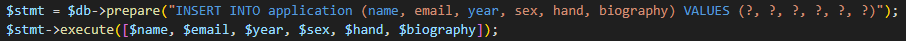
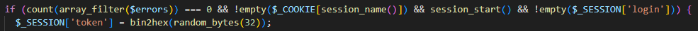
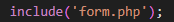

Переделаны задания №5 и №6
Используются функции htmlspecialchars() и strip_tags() при выводе данных в форму. Это помогает предотвратить внедрение HTML- и JavaScript-кода, защищая от XSS-атак.
Используются подготовленные запросы $db->prepare() и $stmt->execute() для выполнения запросов к базе данных. Это позволяет избежать SQL-инъекций путем корректной обработки параметров запроса.
Генерируется токен в сессии и проверяется его наличие и соответствие при обработке запросов. Это помогает предотвратить CSRF-атаки, гарантируя, что запросы отправлены только с моего веб-сайта.
Указывается путь к файлу в операторе include() вручную. Это помогает предотвратить включение нежелательных файлов.
